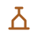
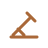

Hexágonos ilustrados · três variações · formas reconhecíveis além da cor · obra própria CC0.
Mapas ilustrativos 10 × 8. Névoa lembrada: relógio e transparência; desconhecida: cobertura opaca.
Fronteira tracejada; rio contínuo. Arestas NE, E, SE, SW, W, NW no sentido horário.
Ícones planos de 48 × 48, desenhados para permanecer legíveis a 24 × 24. Forma e cor carregam significado; a versão monocromática serve estados e superfícies compactas.
Pressão de criseAmeaça de guerraExposição ambientalPopulaçãoTurnoEraMandatoGovernadorEntropiaLedger: confiançaLedger: ressentimentoLedger: dívidaTratadoGuerraProntoCusto de IA
Alternativa para daltonismo
Comida

ProduçãoRiquezaConhecimentoCulturaMetalLuxoCoesãoLegitimidadeEstabilidadePressão de criseAmeaça de guerraExposição ambientalPopulaçãoTurnoEraMandatoGovernadorEntropiaLedger: confiançaLedger: ressentimentoLedger: dívidaTratadoGuerraProntoCusto de IA
Status monocromático
ComidaProduçãoRiquezaConhecimentoCulturaMetalLuxoCoesãoLegitimidadeEstabilidadePressão de criseAmeaça de guerraExposição ambientalPopulaçãoTurnoEraMandatoGovernadorEntropiaLedger: confiançaLedger: ressentimentoLedger: dívidaTratadoGuerraProntoCusto de IA
Fundo escuro
Paleta padrão
ComidaProduçãoRiquezaConhecimentoCulturaMetalLuxoCoesãoLegitimidadeEstabilidadePressão de criseAmeaça de guerraExposição ambientalPopulaçãoTurnoEraMandatoGovernadorEntropiaLedger: confiançaLedger: ressentimentoLedger: dívidaTratadoGuerraProntoCusto de IA
Alternativa para daltonismo
ComidaProduçãoRiquezaConhecimentoCulturaMetalLuxoCoesãoLegitimidadeEstabilidadePressão de criseAmeaça de guerraExposição ambientalPopulaçãoTurnoEraMandatoGovernadorEntropiaLedger: confiançaLedger: ressentimentoLedger: dívidaTratadoGuerraProntoCusto de IA
Status monocromático
ComidaProduçãoRiquezaConhecimentoCulturaMetalLuxoCoesãoLegitimidadeEstabilidadePressão de criseAmeaça de guerraExposição ambientalPopulaçãoTurnoEraMandatoGovernadorEntropiaLedger: confiançaLedger: ressentimentoLedger: dívidaTratadoGuerraProntoCusto de IA
PROCEDWORLD / ESTUDO DE ENTIDADES / 03
Unidades, edifícios e cidades
Ícones vetoriais planos de 48 × 48, legíveis a 24 × 24. Cor de civilização é parâmetro nos marcadores; estados também têm sinais de forma.
Unidades
BatedorGuia de trilhasMilíciaGuarda de muralhaIncursorEquipe de cercoColono

TrabalhadorCaravanaMercador costeiro
Edifícios
ArmazémCeleiro administradoPosto de vigiaPortão fortificadoOficinaCasa de obrasCasa do conselhoArquivo cívicoEnfermariaPraça de mercadoMercado regulamentadoCasa de aprendizadoObras de águaDepósito de travessia